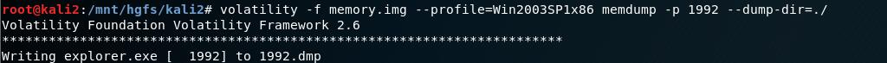
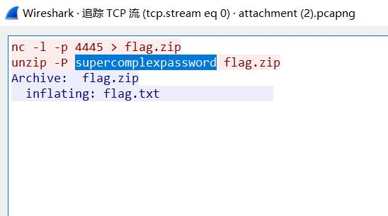

MISC-data-1
Data[1]
写在前面
浅薄笔者目前还无法完全消化理解wireshark相关流量分析的工具的内涵，先就针对遇到的题目类型做简单整理记录。
1
追踪流TCP+关键词搜索
被嗅探的流量
某黑客潜入到某公司内网通过嗅探抓取了一段文件传输的数据，该数据也被该公司截获，你能帮该公司分析他抓取的到底是什么文件的数据吗？ 注意：得到的 flag 请包上 flag{} 提交
下载附件可知其中是一个.pcapng文件，用wireshark打开。
追踪其中的tcp流（有的题会追踪http流），故👇
通过查找关键词flag可得👇
2
追踪流TCP+熟悉jpg的base64表示
数据包中的线索
公安机关近期截获到某网络犯罪团伙在线交流的数据包，但无法分析出具体的交流内容，聪明的你能帮公安机关找到线索吗？ 注意：得到的 flag 请包上 flag{} 提交
下载附件得一pcapng文件，用wireshark打开。如题1所示打开TCP追踪👇
根据其中标记的“/9j/”部分，可得知该文件为base64形式下的jpg文件。补上文件头“data:image/jpeg;base64,”后在浏览器的地址栏中输入可得到图片
3
追踪流+foremost分离+爆破
被偷走的文件
一黑客入侵了某公司盗取了重要的机密文件，还好管理员记录了文件被盗走时的流量，请分析该流量，分析出该黑客盗走了什么文件。 注意：得到的 flag 请包上 flag{} 提交
wireshark追踪流可发现其中隐藏了一个rar文件👇
foremost分离后，可发现压缩包带锁，暴力破解可得👇
解得flag。
4
追踪流+bool注入
sqltest
网站遭受到攻击了，还好我们获取到了全部网络流量。 链接: https://pan.baidu.com/s/1AdQXVGKb6rkzqMLkSnGGBQ 提取码: 34uu 注意：得到的 flag 请包上 flag{} 提交
追踪http流后，观察到大量类似文件（后得知此为bool注入，查资料得在对一个字符进行bool判断时，被重复判断的ASCII值就是正确的字符）👇
拼接可得，改flag的ascii为
102 108 97 103 123 52 55 101 100 98 56 51 48 48 101 100 53 102 57 98 50 56 102 99 53 52 98 48 100 48 57 101 99 100 101 102 55 125
得f l a g { 4 7 e d b 8 3 0 0 e d 5 f 9 b 2 8 f c 5 4 b 0 d 0 9 e c d e f 7 }
5
WireShark插入RSA密钥
WebNet0
Try using a tool like Wireshark.How can you decrypt the TLS stream?
给定一个pcapng文件和一密钥，依次点击编辑->首选项->RSA密钥->Add new keyfile后追踪HTTP流即可得到flag。
6
WebNet1
Try using a tool like Wireshark.How can you decrypt the TLS stream?
同第五题的解法能得假flag:picoCTF{this.is.not.your.flag.anymore}
搜索可得真flag:picoCTF{honey.roasted.peanuts}
7
流量分析入门
菜刀666
流量分析，你能找到flag吗 注意：得到的 flag 请包上 flag{} 提交
到手为一名为666666.pcapng的文件，丢进wireshark,其中大部分为TCP流，单个流追踪时没有结果，尝试导出。
按文件大小，锁定了一名为1.php的文件，save.
通过简单分析，能看出该Php文件中
1)post传入了action变量，对其进行base64解密
@ini_set("display_errors","0");@set_time_limit(0);@set_magic_quotes_runtime(0);echo("->|");;$f=base64_decode($_POST["z1"]);$c=$_POST["z2"];$c=str_replace("\r","",$c);$c=str_replace("\n","",$c);$buf="";for($i=0;$i<strlen($c);$i+=2)$buf.=urldecode("%".substr($c,$i,2));echo(@fwrite(fopen($f,"w"),$buf)?"1":"0");;echo("|<-");die(); |
2)z1
D:\wamp64\www\upload\6666.jpg |
3)z2
文件头FFD8FF，可看出此为jpg文件后缀，另存为jpg文件后得到：

第二条路为对大文件进行分解。
binwalk 666666.pcapng |
binwalk -e 666666.pcapng |
得到诸多.xz及一个空白的flag.txt,说明路走对了。
发现一个加密的.zip文件，密码为此前的Th1s_1s_p4sswd_!!!
打开得flag
flag{3OpWdJ-JP6FzK-koCMAK-VkfWBq-75Un2z} |
8
john-in-the-middle
注意：得到的 flag 请包上 flag{} 提交
大量TCP和HTTP流量包，导出对象HTTP，得到大量文件👇
java -jar C:\Users\16231\Desktop\Stegsolve.jar |
logo.png和scanlines.png通过Image Combiner进行色道分离后得到flag
挖个坑，不明白这个操作是为啥以及怎么看出来的😂
9
[ACTF新生赛2020]NTFS数据流
注意：得到的 flag 请包上 flag{} 提交
由于这道题比较简单，题干直接给出了考点，用NtfsStreamsEditor打开对应的压缩包，导出后查看得到flag
ACTF{AAAds_nntfs_ffunn?} |
10
间谍启示录
在城际公路的小道上，罪犯G正在被警方追赶。警官X眼看他正要逃脱，于是不得已开枪击中了罪犯G。罪犯G情急之下将一个物体抛到了前方湍急的河流中，便头一歪突然倒地。警官X接近一看，目标服毒身亡。数分钟后，警方找到了罪犯遗失物体，是一个U盘，可惜警方只来得及复制镜像，U盘便报废了。警方现在拜托你在这个镜像中找到罪犯似乎想隐藏的秘密。 注意：得到的 flag 请包上 flag{} 提交
得到一iso文件，本想着挂载啥的。
首先尝试foremost分离，得到
ole:= 2
rar:= 1
exe:= 1
看看压缩包，存在flag.exe,运行一下
得到 机密文件.txt
Flag{379:7b758:g7dfe7f19:9464f:4g9231} |
11
[V&N2020 公开赛]拉胯的三条命令
先看了一波网上的WP，但是还是不太懂。多亏了pdsdt师傅耐心讲解，终于懂了哈哈哈哈哈
zip加后缀还原后，得到题目描述和nmapall.pcapng。
编辑-》首选项-》外观-》列
显示“目的端口”并按从小到大排序后，观察。
举例👇
这张图中可以看出，本机的35232端口给目标机（其实也是自己）的1端口发送SYN包，但是没有后续。故判断该端口为关闭状态。
其中3、4、6、7、9、13等端口都是一样的情况。
但是21端口就不一样了。
60176、33892等端口跟21分别进行了连续通信，说明该端口一定是打开的状态。
以此类推，21 22 631 801 3306
当时还纠结了很久，为什么后面的端口一样满足要求，但是都不算。后明白因为这个流量是自己打自己，所以同一条流量会显示两遍。故5939后的都可以不看啦
12
[ACTF新生赛2020]swp
得到的 flag 请包上 flag{} 提交。
得到wget.pcapng
流量分析！！
导出http流，得到一堆有的没的
观察，发现其中有hint.html
很好，不知道他在说什么
继续观察，发现一个名为secret.zip的压缩包，有东西！
存在名为flag的文件，丢进010
找到flag
actf{c5558bcf-26da-4f8b-b181-b61f3850b9e5} |
13
[安洵杯 2019]Attack
得到的 flag 请包上 flag{} 提交。
学到了流量分析新姿势
常规操作：
1）分析，导出HTTP流，得到lsass.dmp
lsass是Windows系统的一个进程，用于本地安全和登陆策略 |
2)foremost分离得到加密压缩包
通过大神WP学到新姿势，mimikatz一个名叫猕猴桃的软件(内网渗透工具，可在lsass.exe进程中获取windows的账号明文密码)
以管理员权限打开后：
//提升权限 |
解压缩包得D0g3{3466b11de8894198af3636c5bd1efce2}
14
USB
Do your konw usb?? 注意：得到的 flag 请包上 flag{} 提交
得到233.rar及key.ftm，暂时放着，不知道有啥用
做压缩包题最好用winrar。360会自动过滤掉一些东西。
提示文件头损坏，对比大佬笔记https://www.freebuf.com/column/199854.html
常规文件头没问题，考虑【HEAD_TYPE应该是0x74而不是0x7A。】
得到233.png
分析一波，当Blue通道被置为0的时候出现了二维码！
ci{v3erf_0tygidv2_fc0} |
图片的信息已经被榨干了，来处理key.ftm
查看二进制，能看到504b0304等字样，foremost可提取到压缩包
得到key.pcap一个流量
tshark -r key.pcap -T fields -e usb.capdata > usbdata.txt |
通过脚本处理USB流量
mappings = { 0x04:"A", 0x05:"B", 0x06:"C", 0x07:"D", 0x08:"E",0x09:"F", 0x0A:"G", 0x0B:"H", 0x0C:"I", 0x0D:"J", 0x0E:"K",0x0F:"L", 0x10:"M", 0x11:"N",0x12:"O", 0x13:"P", 0x14:"Q",0x15:"R", 0x16:"S", 0x17:"T", 0x18:"U",0x19:"V", 0x1A:"W",0x1B:"X", 0x1C:"Y", 0x1D:"Z", 0x1E:"1", 0x1F:"2", 0x20:"3",0x21:"4", 0x22:"5", 0x23:"6", 0x24:"7", 0x25:"8", 0x26:"9",0x27:"0", 0x28:"\n", 0x2a:"[DEL]", 0X2B:" ", 0x2C:" ", 0x2D:"-", 0x2E:"=", 0x2F:"[", 0x30:"]", 0x31:"\\", 0x32:"~", 0x33:";",0x34:"'", 0x36:",", 0x37:"." } |
得到
output : |
至此，我们已经得到了一个密文ci{v3erf_0tygidv2_fc0}和密钥XINAN
需要密钥的文本加密，考虑维吉尼亚编码：
fa{i3eei_0llgvgn2_sc0} |
由于没有看到flag头，一把梭得到
flag{vig3ne2e_is_c00l} |
15
[SUCTF2018]followme
得到的 flag 请包上 flag{} 提交。来源：https://github.com/hebtuerror404/CTF_competition_warehouse_2018
得到一个数据包，发现存在一堆HTTP流，文件名基本都为【login?_=】
猜测flag为登录密码，因为登录成功和失败有一定区别，故按大小排序，有明显不同的那个看看
得到flag
SUCTF{password_is_not_weak} |
16
voip
得到的 flag 请包上 flag{} 提交。
得到一个流量包，全是RTP流量
学到了【电话->RTP->RTP流】或者根据题目名称【电话->VoIP通话】
接下来就是英语听力部分
flag{9001IVR} |
17
[HDCTF2019]你能发现什么蛛丝马迹吗
得到的 flag 请包上 flag{} 提交。
漂亮的内存取证
利用volatility
volatility -f memory.img imageinfo |
查看可能版本
volatility -f memory.img --profile=Win2003SP1x86 pslist |
查看进程
发现DumpIt.exe
查看cmd命令使用记录
volatility -f memory.img --profile=Win2003SP1x86 cmdscan |

发现flag的痕迹
dump下来

foremost分离
得到output文件夹
有东西!
得到一张二维码
扫描后
jfXvUoypb8p3zvmPks8kJ5Kt0vmEw0xUZyRGOicraY4= |
和
key:Th1s_1s_K3y00000 |
AES带密码带偏移量解密http://tool.chacuo.net/cryptaes
flag{F0uNd_s0m3th1ng_1n_M3mory} |
18
百里挑一
好多漂亮的壁纸，赶快挑一张吧！ 注意：得到的 flag 请包上 flag{} 提交
得到很多TCP数据包，导出HTTP数据能发现题目提到的大量壁纸。
strings *|grep flag |
未果
花了点时间安装大佬们提到的exiftool
安装ExifTool
Windows：下载ExifTool可执行文件（名为：exiftool-x.x.zip），解压得到exiftool(-k).exe，重命名为exiftool.exe，通过CMD命令行运行。
Linux：下载ExifTool发行包（名为：Image-ExifTool-x.x.tar.gz），解压后运行./exiftool即可。或通过perl Makefile.PL && make install编译安装。
MacOS：下载ExifTool安装包（名为ExifTool-x.x.dmg），安装后在终端执行exiftool使用。
详细的安装文档，参考ExifTool主页安装文档
cb4bbe1c-bffe-4101-a9de-4de40bca4558 (1)# |
得到了一半的flag
后半部分目前不明白是咋推出来的
2.6.a.3.c.0.5.8.9.d.2.3.e.d.e.e.c.}
flag{ae58d0408e26e8f26a3c0589d23edeec} |
19
[BSidesSF2019]zippy
得到的 flag 请包上 flag{} 提交
得到一个TCP流量的数据包，追踪几个流量，分别得到了

第一张图开头为PK，以原始数据保存后更改后缀名为.zip
第二章图能得到加密压缩包的密码
打开压缩包得到
CTF{this_flag_is_your_flag} |
20
[BSidesSF2019]table-tennis
得到的 flag 请包上 flag{} 提交
注意到ICMP流中出现了
<html><head><title> |
等字样，挨个誊写


writeat(ob("Q1RGe0p1c3RBUzBuZ0FiMHV0UDFuZ1Awbmd9")); |
base64解码
CTF{JustAS0ngAb0utP1ngP0ng} |